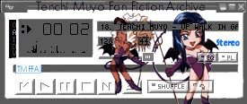

A New Domain |
A subsection of the history page that talks about the moving of the archive to tmffa.com, Version 4.0 |
Summary of Changes
Version 4.0 includes the following changes.
With alll these changes there is a new change to the hirarchy of seaching for a fic. Each divion is now parsected in order to reduce loading time of the pages. I hope this helps. The hirarchy just gets bigger and bigger.
The Organization Format at the time was:
index.html --> fanfic.html --> reg.html --> reg-c-d.html --> r-im.html --> im-ryoko.txt
Celebrating the new Domain
To celebrate the newest version of the archive, I decided to hold a few contests and give away several prizes. Please go to the "Contest" page to partispate.
In addition, Seion made a WinAmp skin for this page a while back. Click on the link below to download the skin. You must have WinAmp in order to use this skin.
Download Winamp Skin
Click here to download.
Soon to come.
I am working on CGI/Perl Scripting for this page. I will be including a search engine, my own votting booth, and other features that require CGI. They will progresively be added though.